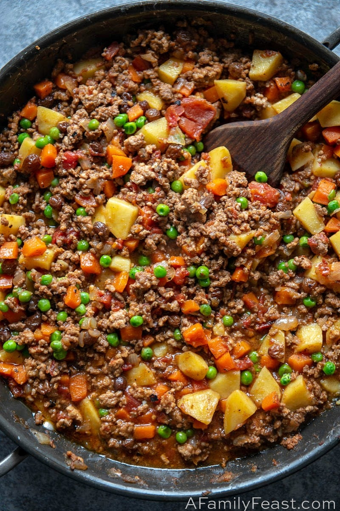

Picadillo

Description
A quick and easy recipe with veggies, ground meat of your choice, and a spicy sauce. It can be served alongside
anything you want. I've done mashed potatoes, rice, beans, and I've even put it on toast. I haven't tried it myself but I
assume that the recipe will be more or less the same if you swap out the meat with vegan meat.
Ingredients
- 1 lb of ground meat (your choice)
- 1 small yellow can of El Pato sauce
- 1 lb of carrot
- 1 lb of potatoes
- 1 can of peas
Steps
- Prepare and cut vegetables to prefered size and set aside
- Add a little oil to the pan and begin cooking the meat
- After meat has browned, add the carrots, potatoes, and El Pato sauce
- Add a canful of water or more if you wish for it to be less spicy
- Bring the contents of the pan to a boil and then turn the heat down to let it simmer
- Check the vegetables for doneness and taste for salt
- You're done!